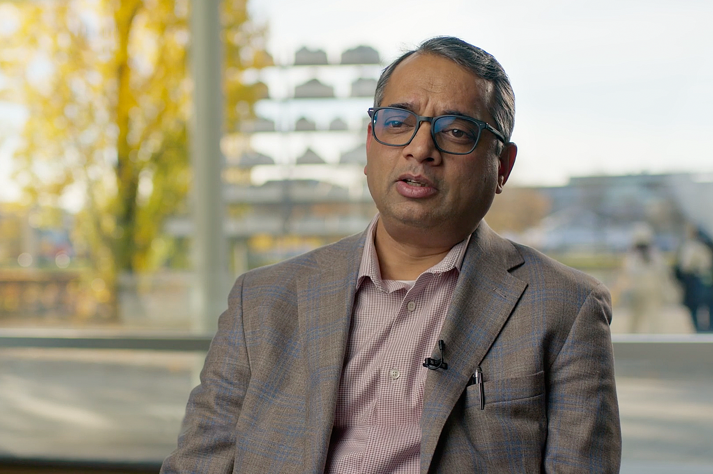

Enterprise AI
Build and deploy AI copilots, assistants, and agents.
With Celonis Process Intelligence, your people can collaborate to optimize every process, in every industry.
Build and deploy AI copilots, assistants, and agents.
See how every process connects across your supply chain so you can make changes that drive the most value.
Transform strategically. Disrupt minimally. Modernize on your own terms with Celonis.
Make your processes work for people, companies, and the planet
Combine process mining and AI to make decisions with less risk and more reward.
Connect your teams and your processes for a better customer experience.
Create lasting value for people, companies, and the planet.
Decrease time-to-market, ensure on-time delivery, and provide stellar experiences
Provide faster, digital banking experiences, make operations and transactions smarter, and adapt quickly to new risks & regulations
Achieve operational excellence, provide phenomenal experiences, and leverage financial controls
Achieve mission-readiness at scale by accelerating system modernization, optimizing supply chains and maximizing spend.
Increase productivity to do more with less, reduce cost & carbon footprint, and create an excellent customer experience
Deliver member services seamlessly, drive efficiency in claims operations, and ensure resilience in finance
See more patients, faster in clinical services, achieve better balance in your supply chain, and transform revenue cycle & finance
Increase supply chain resiliency, accelerate sales cycles, and optimize the customer experience
Deliver a superior experience, drive operational efficiency, and reduce risk & improve quality.
Ensure on-time delivery, accelerate time to market and boost commercial Impact through financial discipline
Shorten response times, improve operational efficiency, and boost labor productivity
Execute your mission, empower your workforce, and de-risk systems transformation.
Reduce costs & flawlessly execute, improve workforce productivity, and provide harmonized experiences
Drive loyalty and engagement, reduce field service expense, and turn every order into an activated customer
Exceed your customer’s expectations, Accelerate grid modernization projects, and reduce costs and time to service
Mondelēz International unlocked $10M across 7 processes with Celonis. Now, they’re using the operational context the platform provides to enable Agentic AI.
Discover how global construction leader Saint-Gobain uses Celonis to drive consistency, efficiency, scalability, and compliance across all operations

Discover how MOL Group increased their perfect order ratio by 40%, using Process Intelligence to resolve one Order-to-Cash bottleneck at a time.
Learn how Novo Nordisk is speeding up clinical development by orchestrating 100 AI agents through Celonis. Their vision: reduce time-to-market by 12 months.
.png)
Find out how Renault Group have realized €15 million value in the first year in the P2P process and use AI to accelerate Center of Excellence process transformation

Learn how Deutsche Bank uses Celonis to reduce onboarding times and spot opportunities to improve the KYC workflow for corporate investment banking.

Read how Molex used Celonis to gain unprecedented visibility into their supply chain leading to a single decision that boosted PO confirmation rates to 90% and saved countless hours of manual approvals.

Standard Bank uses Celonis Process Intelligence to transform CIB Operations – from optimizing cross-border payments to enabling transparency, AI, and automation., Read the story.
.jpg)
Find out how Cosentino is sustaining rapid growth by implementing a digital workforce of AI agents with Celonis.
Discover how Fujitsu created a culture of data-driven improvement with Celonis, connecting systems, teams, and processes – all while saving millions and raising productivity levels.

Discover how Vinmar International uses Celonis as a single source of truth: integrating data from several systems to enhance efficiency, enable Enterprise AI, and drive real-time risk management across logistics operations.

Discover how Cisco is using Celonis Process Intelligence to understand and streamline its ordering process within commercial operations